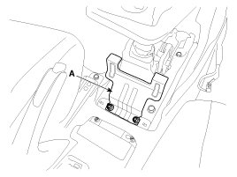
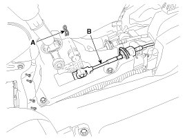
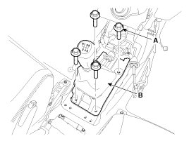
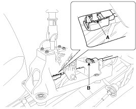
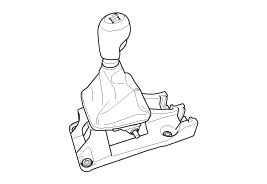
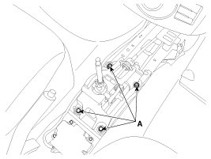
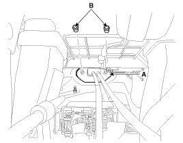
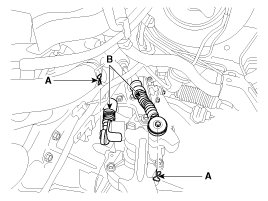
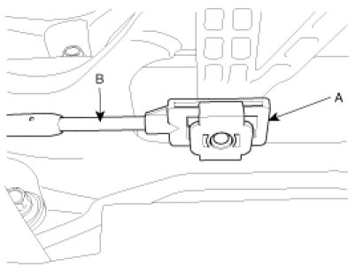
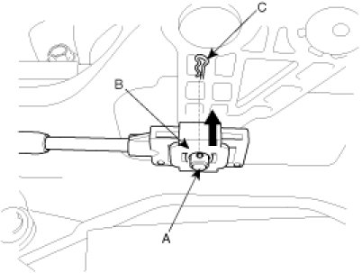

Repair Procedures
Removal
Shift Lever Assembly Replacement
1. Remove the floor Interior console assembly.
2. Remove the cover (A).

3. Remove the select cable (B) by removing the snap pin (A).

4. Remove the shift lever assembly (B) by removing the bolts (A-4ea).
Tightening torque:
8.8 - 13.7 N.m (0.9 - 1.4 kgf.m, 6.5 - 10.1 lb-ft)

5. Remove the shift cable (B) by removing the clip (A).


6. Installation is the reverse of removal.
NOTE:
- Make sure vehicle does not roll before setting room side shift lever and T/M side manual control lever to "N" position.
Shift Cable Replacement
1. Remove the floor Interior console assembly.
2. Remove the cover (A).
3. Remove the select cable (B) by removing the snap pin (A).
4. Remove the shift lever assembly (B) by removing the bolts (A-4ea).
Tightening torque:
8.8 - 13.7 N.m (0.9 - 1.4 kgf.m, 6.5 - 10.1 lb-ft)

5. Remove the shift cable (B) by removing the clip (A).
6. Remove the retainer (A) and nuts (B-2ea).
Tightening torque:
11.8 - 14.7 N.m (1.2 - 1.5 kgf.m, 8.7 - 10.8 lb-ft)

7. Disconnect the select and shift cable assembly (B) after removing the pin (A).

8. Remove the shift cable and select cable at cabin room.
Inspection
1. Check the select cable for proper operation and for damage.
2. Check the shift cable for proper operation and for damage.
3. Check the boots for damage.
4. Check the boots for wear abrasion sticking, restricted movement or damage.
5. Check for the weak or damaged spring.
Installation
1. Installation is the reverse of removal.
NOTE:
- Make sure vehicle does not roll before setting room side shift lever and T/M side manual control lever to "N" position.
- Install the guide member (A) of the select cable (B).

- Adjust the slide clip (B) to fit it into the select lever pin (A) and install the snap pin (C).
